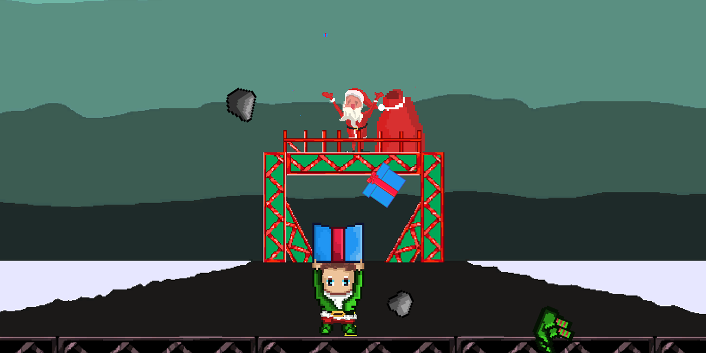

Mad Santa
Download
|
Source Code
- Programming & Art
- Design & Art
Summary
Goal: Create an enjoyable arcade game within 2 days.
Languages Used: C#.
Engine: Unity 3D.
Status: Completed.
Description
Mad Santa is a game where you play as an Elf, picking up after the Mad Santa.
This game was made for a 48 hour Game Jam in collaberation with AIE.
My Contribution
I was the “Lead”/Only Programmer for Mad Santa, and as such everything you see mechanically was done by myself. Even the bugs. I also created around 95% of the Art Assets used for Mad Santa.
Challenges
The biggest challenge in Mad Santa was creating the art, we had no dedicated artists in our team so a giant chunk of my time was devoted to creating art. This time could of been used else where such as fixing bugs or balancing.
Media
